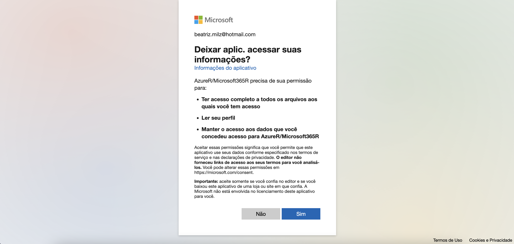

# Carregar pacote Microsoft365R
library(Microsoft365R)
Dica
Esse post foi origalmente publicado no blog da Curso-R.
Introdução
Recentemente, escrevi um post sobre como é possível acessar dados do Google Sheets com R, além de importar respostas do Google Forms. Algumas pessoas comentaram que utilizam o One Drive, e perguntaram como funcionaria para importar tabelas que estão por lá. Como eu não uso One Drive, dei uma explorada para responder, e neste post falarei um pouco sobre como podemos importar dados que estão na conta do One Drive usando o pacote Microsoft365R.
O pacote Microsoft365R é uma interface para acessar o Microsoft 365, e segundo a documentação do pacote, possui funções para interagir com o Microsoft Teams, Outlook, SharePoint Online, e o OneDrive (que é o foco deste post!).
Primeiramente, é necessário instalar o pacote:
install.packages("Microsoft365R")Então, podemos carregá-lo:
Ao carregar o pacote pela primeira vez, a seguinte mensagem aparecerá, dizendo que é possível armazenar as credenciais em uma pasta chamada AzureR e perguntando se permitimos que o pacote crie esse diretório. Eu aceitei respondendo com Yes:
The AzureR packages can save your authentication credentials in the directory:
~/Library/Application Support/AzureR
This saves you having to re-authenticate with Azure in future sessions.
Create this directory? (Yes/no/cancel) Depois de responder com Yes, nada aparentemente acontece, porém o pacote é carregado!
Autenticação
Ao acessar pela primeira vez, o pacote abrirá uma aba do navegador para fazer a autenticação.
Neste exemplo, usarei a função Microsoft365R::get_personal_onedrive() que explicarei posteriormente. No console do R, aparecerá a seguinte mensagem ao utilizar alguma função pela primeira vez:
Microsoft365R::get_personal_onedrive()
# Using authorization_code flow
# Creating Microsoft Graph login for tenant 'consumers'
# Using authorization_code flow
# Waiting for authentication in browser...
# Press Esc/Ctrl + C to abortO navegador abrirá uma janela para que a autenticação seja feita:

Após fazer a autenticação, a seguinte mensagem aparecerá no navegador:
Authenticated with Azure Active Directory. Please close this page and return to R.Isso significa que podemos fechar a aba do navegador e retornar ao R. No console do R, aparecerá a seguinte mensagem:
Authentication complete.Acesso de conta pessoal ou de trabalho?
O primeiro passo após autenticar é acessar o One Drive, e a função para fazer isso depende do tipo de acesso da conta: pessoal ou de trabalho. Como o meu acesso é pessoal, vou usar a função get_personal_onedrive(). Mas caso o seu acesso seja de trabalho, utilize a função get_business_onedrive(). É necessário executar a função e salvar o resultado em um objeto.
onedrive_da_bea <- Microsoft365R::get_personal_onedrive()Agora a forma de interagir com o pacote é um pouco diferente de como usamos na maior parte das vezes. Isso porque o pacote utiliza objetos que são da classe R6, e que permitem utilizar métodos. O foco deste post não é explicar o que são as classes R6, e escrevi este post pensando em ser útil para pessoas que também não conhecem as classes R6. Caso você tenha interesse em saber mais, deixei alguns links de referência no final do post.
Para conferir a classe desse objeto, podemos usar a função class():
class(onedrive_da_bea)
#> [1] "ms_drive" "ms_object" "R6" Ao executar apenas o objeto, o console apresenta os métodos possíveis:
drive_da_bea
#> <Personal OneDrive of Beatriz Milz>
#> directory id: df5a76afb6532845
#> ---
#> Methods:
#> create_folder, create_share_link, delete,
#> delete_item, do_operation, download_file,
#> get_item, get_item_properties, get_list_pager,
#> list_files, list_items, list_shared_files,
#> list_shared_items, open_item,
#> set_item_properties, sync_fields, update,
#> upload_fileSabendo o nome dos métodos, podemos usá-los usando o seguinte padrão: nome_do_objeto$nome_do_metodo()! Existem vários métodos, e vamos explorar os métodos relacionados à importação. Mas caso você use bastante o One Drive no seu dia-a-dia, recomendo experimentar os outros métodos, como os que servem para manipular arquivos (como criar, atualizar, deletar)!
Importar o arquivo
Eu ainda não encontrei um método que permita ler o conteúdo de um Excel diretamente do OneDrive para o R (como fazemos com o Google Drive). Olhando nas issues do GitHub, parece que essa funcionalidade ainda não foi implementada até o momento, e algumas pessoas inclusive sugeriram melhorias neste sentido.
A forma que encontrei para importar um Excel do Ondrive foi fazer o download do arquivo Excel que está no Ondrive, e depois importar o arquivo salvo localmente. Para fazer o download e abrir um arquivo Excel, podemos usar o método download_file() para baixar o arquivo, e então a função readxl::read_excel() para importar o arquivo:
# baixar o arquivo
onedrive_da_bea$download_file("pasta_de_exemplo/pinguins.xlsx",
dest = "pinguins_onedrive.xlsx")
# ler o arquivo baixado
pinguins_do_onedrive <- readxl::read_excel("pinguins_onedrive.xlsx")
dplyr::glimpse(pinguins_do_onedrive)
#> Rows: 344
#> Columns: 8
#> $ especie <chr> "Pinguim-de-adélia", "Pinguim-de-adé…
#> $ ilha <chr> "Torgersen", "Torgersen", "Torgersen…
#> $ comprimento_bico <dbl> 39.1, 39.5, 40.3, NA, 36.7, 39.3, 38…
#> $ profundidade_bico <dbl> 18.7, 17.4, 18.0, NA, 19.3, 20.6, 17…
#> $ comprimento_nadadeira <dbl> 181, 186, 195, NA, 193, 190, 181, 19…
#> $ massa_corporal <dbl> 3750, 3800, 3250, NA, 3450, 3650, 36…
#> $ sexo <chr> "macho", "fêmea", "fêmea", NA, "fême…
#> $ ano <dbl> 2007, 2007, 2007, 2007, 2007, 2007, …Caso queira abrir o arquivo no navegador (para ver, compartilhar ou coisas similares), use o método open_item(), informando o caminho até o arquivo:
onedrive_da_bea$open_item(path = "pasta_de_exemplo/pinguins.xlsx") Conclusão
Espero que este post seja útil para quem usa o One Drive também. Também espero que o pacote seja aprimorado para conseguir importar os dados sem que seja necessário baixá-los.
Caso você encontre algum método melhor para importar os dados, conta pra gente!
Até a próxima!
Referências
Documentação do pacote Microsoft365R - Vignette sobre o OneDrive
-
Avançado: Referências sobre classes R6 em R